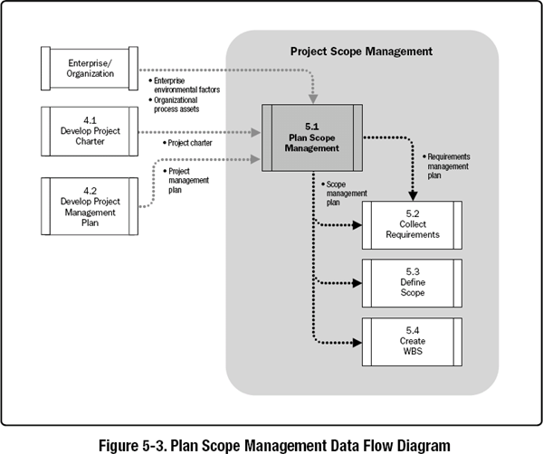
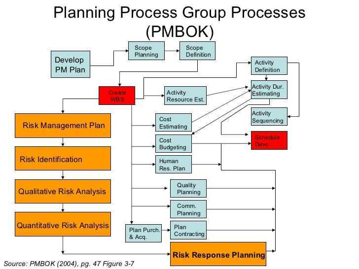

Cada característica tem de ser traduzida em área de actividade que possa produzir um resultado a ser entregue e que implementa a característica desejada. Características não traduzíveis, têm de ser retiradas, e se absolutamente necessárias pertencem a outro projecto, mas não ao que estamos planeando.
Depois de completo esta traducão, o bloco global de trabalho a realizar é dividido em unidades mais fáceis de administrar e realizar, chamados pacotes de entrega.
Para se apreciar porque o WBS é o coracão do projecto, o seguinte diagrama (versão antiga de 2004), dá uma nocão dos processos ulteriores baseados no WBS.